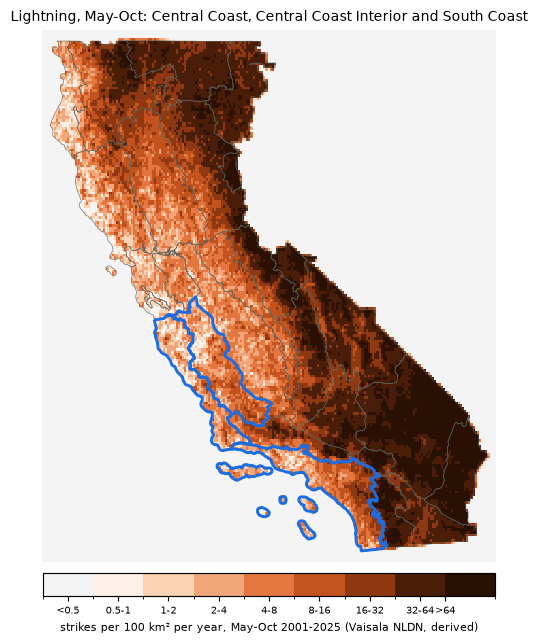

Thunderstorms and new lightning fires · Southern California, May–Oct · footprint: Central Coast, Central Coast Interior and South Coast · today's run 2026-10-17 10:25 PT
CAPE (convective available potential energy, J/kg) is the energy a rising air parcel can gain: the fuel for thunderstorms. This measure is the 90th-percentile CAPE across the footprint's grid cells, the higher of the fire day's 5 a.m. and 5 p.m. (12 and 00 UTC) values. "90th percentile" means the most unstable tenth of the footprint, where storms would form first.
Lightning starts most of California's largest fires. In Northern California 235 of the 462 fires since 2001 that burned at least 1,000 acres were lightning-caused. Lightning fires come in clusters, often in remote country, and most are found on the day of the storm or the next. This row asks two things: will there be a lightning day, and how likely is a new large fire?
It was fit to 25 years of lightning strikes. Of the rules tested, this plain CAPE measure matched real lightning days best. Requiring dry air aloft made it worse: storms need moisture to form, and dryness matters for whether a strike starts a fire, which the fuels side (ERC) handles.
SC06 Central Coast Interior, SC07 Central Coast, SC08 South Coast

Lightning: Vaisala National Lightning Detection Network (NLDN), 2000–2025, used under license. Shown only as derived counts, rates and maps; no strike data are published or offered for download.
A lightning day here is a fire day with at least 100 strikes inside the footprint's PSAs. On a typical May–Oct day 2.9% of days are lightning days; per year that's about May 0.4, Jun 0.4, Jul 1.0, Aug 1.2, Sep 1.4, Oct 0.9 by month. Past the elevated cutoff, 37% are, and 20% have 500 strikes or more. History 2001-2025, 4,600 days, 46 past the cutoff.
On the 46 days past the cutoff, a lightning fire that went on to burn at least 1,000 acres was found in the footprint that day or the next on 2 of them (4.3%, against 0.3% on a typical May–Oct day): about ×9.8 the usual odds for the date. That covers 14% of the 14 days a large lightning fire was found there.
| Days | Days with a new large lightning fire | × usual | |
|---|---|---|---|
| Thunderstorm setup and ERC ≥ 90th percentile | 9 | 2 | ×25.3 |
| Thunderstorm setup, ERC below 90th | 36 | 0 | ×7.7 |
| No setup, ERC ≥ 90th | 435 | 8 | ×5.6 |
| Neither | 3,384 | 4 | ×0.4 |
ERC is the footprint-average energy release component percentile from the toolkit's NFDRS reference data (2005–present). Each cell's odds are pulled toward its row's overall odds by 40 days' worth of history, so thin cells can't swing the forecast.
Dry versus wet lightning: on the 112 lightning days with under 0.1 inch of rain across the footprint (ERA5), a large lightning fire was found that day or the next on 2.7% of them; on the 20 wetter lightning days, 0.0%.
Days the most large (≥1,000-acre) lightning fires were found in the footprint, 2001–2025, with the strikes that day or the day before and what this measure showed.
Fires and causes from the satellite fires table (MTBS / WFIGS perimeters; cause and discovery from FPA FOD / InFORM). Strike counts are derived from Vaisala NLDN.
% of each ensemble's members past the elevated cutoff (≥ 1154 J/kg), by fire day. Only ECMWF IFS ENS and NOAA GEFS forecast CAPE; the two AI models don't.
| Model | 10/17 | 10/18 | 10/19 | 10/20 | 10/21 | 10/22 | 10/23 | 10/24 | 10/25 | 10/26 | 10/27 | 10/28 | 10/29 | 10/30 | 10/31 |
|---|---|---|---|---|---|---|---|---|---|---|---|---|---|---|---|
| All models | 0 | 0 | 0 | 0 | 0 | 0 | 0 | 0 | 2 | 3 | 0 | 1 | 1 | 1 | 1 |
| ECMWF IFS ENS (physics) | 0 | 0 | 0 | 0 | 0 | 0 | 0 | 0 | 4 | 6 | 0 | 2 | 2 | 2 | 2 |
| NOAA GEFS (physics) | 0 | 0 | 0 | 0 | 0 | 0 | 0 | 0 | 0 | 0 | 0 | 0 | 0 | 0 | 0 |
| 10/17 | 10/18 | 10/19 | 10/20 | 10/21 | 10/22 | 10/23 | 10/24 | 10/25 | 10/26 | 10/27 | 10/28 | 10/29 | 10/30 | 10/31 | |
|---|---|---|---|---|---|---|---|---|---|---|---|---|---|---|---|
| Forecast ERC percentile (area mean, FEMS) | 87 | 87 | 78 | 60 | 41 | 37 | 36 | 36 | 36 | 36 | 36 | 36 | 36 | 36 | 36 |
| × usual odds of a new large lightning fire | ×0.4 | ×0.4 | ×0.4 | ×0.4 | ×0.4 | ×0.4 | ×0.4 | ×0.4 | ×0.5 | ×0.6 | ×0.4 | ×0.5 | ×0.5 | ×0.5 | ×0.5 |
Odds combine this measure (each member past the cutoff or not) with the forecast fuels (ERC ≥ the 90th percentile = critically dry), using the history in "Weather + fuels" above. Faded: past the 7-day FEMS forecast, the last day's fuels carried forward.
A model's CAPE can run higher or lower than the reanalysis this was fit to; the run archive is collecting the forecasts to check that. How to use it: Reading the calibrated outlook.